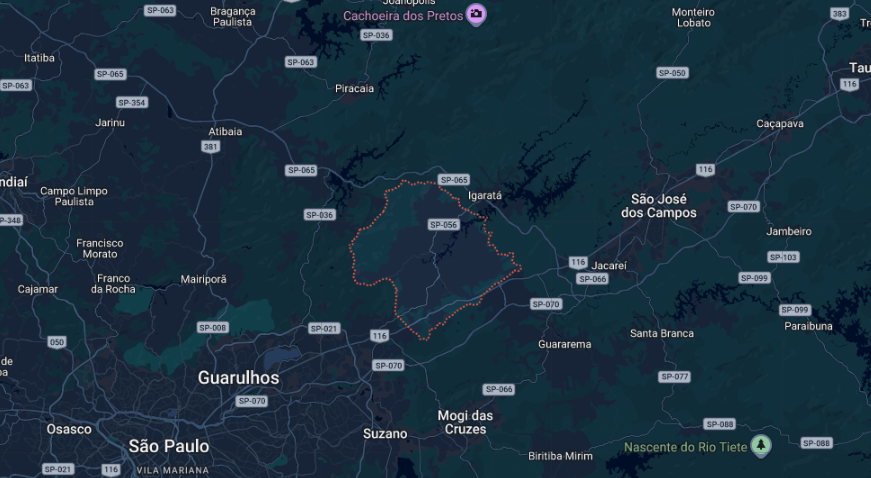
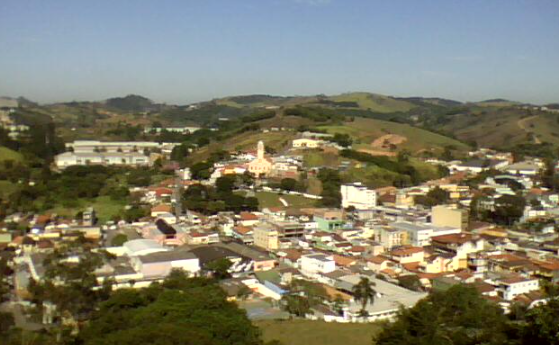
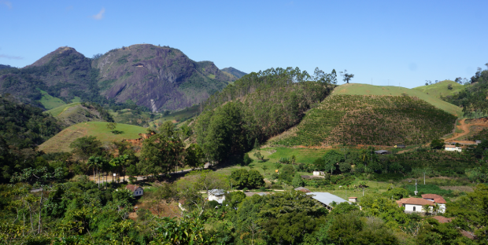

Founded in 1770 and named after Saint Isabel of Aragon, Santa Isabel has deep historical roots tied to the gold rush and the development of the Vale do Paraíba region. Originally settled by miners returning from Minas Gerais, the town eventually transitioned into a hub for coffee production and agriculture during the Imperial era. Its strategic location between São Paulo and Rio de Janeiro made it a vital stop for travelers, leading to its growth from a small settlement on the "Morro Grande" farm into an established parish by 1812.
A Great Place for Families While the town has grown over the centuries, it remains a small, charming countryside city. It maintains a tranquil atmosphere that is hard to find in larger metropolises. For those who value a conservative environment and are looking for a safe, traditional place to raise their children, Santa Isabel is an excellent choice. It offers a peaceful lifestyle rooted in community values and historical heritage.


